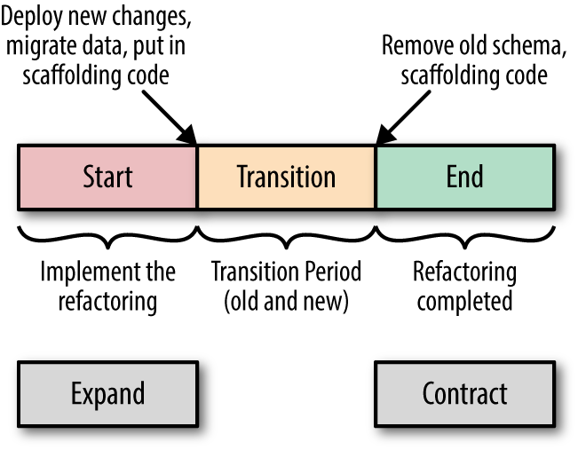

AMT
Database evolution and migration
Bertil Chapuis
## <i class="fas fa-tasks"></i> Overview of Today's Class - TBD
Migrating databases
## <i class="fas fa-database"></i> Migrating databases When **developing** an application, the database schema will evolve over time. - **Without production data**, it is easy to **drop and recreate** the database from scratch. Once the application is in **production**, the database schema will continue to evolve. - **With production data**, evolution requires **migrations**. **Migration tools** address this problem by allowing to evolve the database schema while keeping the data.
<img src="./images/deployment-and-migration-process.svg" alt="Deployment and migration process" style="width: 90%;"> Notes: source: https://teamplify.com/blog/zero-downtime-DB-migrations/ This figure illustrates a deployment and migration process orchestrated by a CI/CD pipeline. The CI/CD pipeline will: - Run the database migration scripts - Progressively deploy the new version of the application This process allows to deploy a new version of the application without downtime. However, some inconsistencies may occur during the deployment. **Can you spot them?**
## <i class="fas fa-database"></i> Flyway Flyway is a database migration tool that is very easy to use. You can add Flyway to your Quarkus project by adding the following dependency: ``` <dependency> <groupId>io.quarkus</groupId> <artifactId>quarkus-flyway</artifactId> </dependency> ``` Then, you can add your migration scripts in the `src/main/resources/db/migration` folder. ``` src/main/resources/db/migration/V1__create_person_table.sql src/main/resources/db/migration/V2__create_order_table.sql src/main/resources/db/migration/V3__create_order_line_table.sql src/main/resources/db/migration/V4__create_item_table.sql ``` Flyway will automatically execute these scripts in the correct order and track which scripts have already been executed.
## <i class="fas fa-database"></i> Be careful with migrations When using migration tools, you should be **extremely careful**: - **Backup your database** before running a migration script. - **Test your migration** scripts on a dump of your production database before running them on the production database. - **Do not** **modify**, **delete**, **rename**, or **change** a migration script that has already been executed. If you do any of these things, you will probably **break the migration process**. **Forward thinking** is key when writing migration scripts.
## <i class="fas fa-database"></i> What about rollbacks? Sadly, the rollback feature of Flyway is part of the commercial version. However, even if opensource alternatives exists (e.g. [Liquibase](https://docs.liquibase.com/home.html)) the **rollback feature is not a silver bullet**. - For instance, after dropping a table or a column, the data is lost forever and cannot be recovered. Again, **forward thinking** is crucial when writing migration scripts. - For instance, if a migration script deletes data, it is a good idea to first mark the data as deprecated, and then delete it in a later migration script.
## <i class="fas fa-database"></i> Database refactoring Introducing changes to schemas can be split into two main categories: * Backward compatible changes with the code base * Backward-incompatible changes with the code base Backward compatible changes are trivial to introduce as they can be introduced decoupled of changes within the code base. Backward-incompatible changes are non-trivial to apply as it will require to synchronize with changes to the code base and their respective deployments.
## <i class="fas fa-database"></i> Database refactoring - Backward-incompatible, Downtime When service downtime is accepted, it is possible to introduce breaking change by coupling change sets together and align their deployments. In a nutshell: - Shutdown all instances of application vX, so that nothing is reading or writing to the database schema vY. - Deploy application vX+1 and migration scripts representing the database schema vY+1 that introduces the breaking change; vX+1 and vY+1 are compatible together. - Application vX+1 and database schema vY+1 are operational. Putting aside the requirement for service downtime, this approach demands greater care to ensure the compatibility of the two sets of changes in code and database schema; and their coupled deployment. This approach is rendered more error-prone and difficult (if not impossible) when the database is used by more than one application. Moreover deployment automation should then factor in this behavior and not conflict with non coupled deployment. **It is a pattern that could be used for prototype application but that won't be reliable for productive application.**
## <i class="fas fa-database"></i> Database refactoring - Backward-incompatible, expand and contract Expand and contract is a pattern to break backward-incompatible changes into a chain of backward-compatible changes through three distinctive phases. The changes in code and database schema are decoupled so that they can be developed, tested and deployed separately. * **Expand**, introduce backward-compatible changes that implements the refactoring in the database schema. * **Migrate**, introduce code changes that are moving to the newly capabilities of the refactored database schema. * **Contract** (i.e. to reduce to smaller size), consolidation by removing or cleaning-up any non-essential changes introduced in the expand phase to support the migration phase that are not used by the code anymore.  Building Evolutionary Architectures, 2017, Neal Ford, Rebecca Parsons, Patrick Kua This pattern is not limited to database refactoring and can be applied in others contexts. See https://martinfowler.com/bliki/ParallelChange.html
## <i class="fas fa-database"></i> Database refactoring - Backward-incompatible, expand and contract Example: Merge two or more tables into a single table. <img src="./images/merge-two-tables.png" alt="Generated schema" style="width: 50%;"> https://databaserefactoring.com/MergeTables.html Refactoring Databases: Evolutionary Database Design, 2006, Scott W. Ambler, Pramod J. Sadalage
## <i class="fas fa-database"></i> Database refactoring - Backward-incompatible, expand and contract Example: Rename an existing table Using View <img src="./images/rename-table-view.png" alt="Generated schema" style="width: 50%;"> https://databaserefactoring.com/RenameTable.html Refactoring Databases: Evolutionary Database Design, 2006, Scott W. Ambler, Pramod J. Sadalage
Questions?